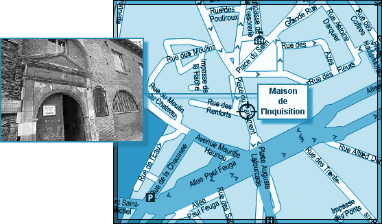
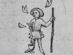

L'ICPA est une association privée créée par des amis et des collègues du journaliste Jack Lorski au lendemain de l'annonce de son meurtre en Écosse. Son seul but est d'aider les services de police et de justice internationaux à mettre fin le plus tôt possible aux agissements criminels du Phoenix.
SKL NETWORK est l'agence qui employait Jack Lorski. Elle a reçu et rendu public les deux CD-Roms envoyés par le Phoenix.
LIBERATION.FR a publié plusieurs articles sur l'affaire du Phoenix. Utilisez son moteur de recherches pour accéder à ses archives.
VICTIME N°4 : JOSÉ CORTADO
- IDENTITÉ
José Cortado avait 38 ans au moment de sa mort. Il était journaliste au magazine scientologue Impact.
Passionné d'ésotérisme et par la période de l'Inquisition qu'il considérait comme « l'un des moments les plus fascinants de l'histoire catholique en France », il y a consacré tout un site Internet, repris par sa fille Jane depuis sa disparition.
Il était membre laïc de Manus Domini.
- PHOTO
- DATE ET LIEU DU CRIME
Le 17 février 2002, le corps de José Cortado est retrouvé devant la Maison de l'Inquisition, à Toulouse. - AUTOPSIE
José Cortado a été vidé de son sang. Des inscriptions latines ont été découvertes sur son corps. - ANALYSE
José Cortado est la quatrième victime connue du Phoenix. Le tueur l'a d'abord choisi parce qu'il était membre de Manus Domini, condition sine qua non de sa vengeance contre cette société secrète.
Afin de respecter son rituel lié au parcours européen de son maître à penser, Giordano Bruno, le Phoenix a également choisi José Cortado parce qu'il était toulousain. En effet, le philosophe italien a enseigné deux ans à Toulouse (qui était alors sous le joug d'un sévère dogmatisme catholique). Il s'opposera là-bas à Francisco Sanchez, philosophe portugais dont il dénonce l'approche empirique.
Le choix de la Maison de l'Inquisition et de la date du meurtre sont hautement symboliques quand on connait la fin de Giordano Bruno. C'est dans cette maison qu'est né l'Ordre des Dominicains, en 1215. Un an plus tard, elle fut investie par l'administration inquisitoriale et devint un tribunal de la foi jusqu'en 1575.
Toujours en référence à son maître, le Phoenix a signé son crime en associant José Cortado à Apollo (Apollon), le sixième principe élémentaire de la magie brunienne (De imaginum idearum compositione, 1591) :Il apparaît en berger des plus charmants, muni d'un bâton et d'une bourse […] un jeune homme étincelant au visage radieux, pressant le sang d'oiseaux déchiquetés, puis mélangeant et offrant la boisson de la divination. - COMMENTAIRES DU PHOENIX
• « Quatrième sacrifié. Il est mort vidé de son sang. »
• « Je ne connais pas l'âge exact de sa fille mais Cortado avait 38 ans. » - DOCUMENTS
• Article d'un journal français relatant la découverte du corps de José Cortado
« Il est 5 heures dans la nuit de samedi à dimanche quand Albert B. découvre près de sa voiture garée devant la Maison de l'Inquisition le cadavre d'un homme gisant sur le sol. D'après les premières constations de la police, la victime n'a pas été tuée sur les lieux mais elle devait être déjà morte quand elle a y été déposée. L'identité de la victime (un homme d'une trentaine d'années) n'a pu être déterminée à l'heure où nous bouclons notre article. D'après le commissaire Mathieu, les enquêteurs ne négligent aucune piste : règlement de compte entre bandes rivales, crime passionnel, meurtre de rôdeur… Ce fait-divers vient relancer la polémique sur l'insécurité dans notre région. »
• Article d'un journal français sur le meurtre de José Cortado
« Le meurtre de José Cortado, dont le corps a été retrouvé dimanche dernier, pose aux enquêteurs de nombreuses questions. Les circonstances du meurtre tout d'abord : pourquoi le ou les assassins ont-ils choisi de se débarrasser du cadavre en plein centre ville, au risque de se faire repérer ? La maison de l'Inquisition semble ne pas avoir été choisie au hasard. On connaissait la fascination de la victime pour tout ce qui a trait à cette sombre période de notre histoire. Ses recherches dans ce domaine ont permis d'en éclaircir certains aspects, même si certains lui reprochaient son manque d'objectivité allant jusqu'à faire peser sur lui un soupçon de fanatisme. Quoiqu'il en soit, en déposant son corps devant ce lieu symbolique, le meurtrier cherchait peut-être à attirer l'attention vers cet aspect plus sombre de sa victime ? Nombreux sont ceux qui en sont aujourd'hui persuadés tant il est vrai que la personnalité de la victime reste ambiguë. S'agit-il d'une simple coïncidence ou d'une sombre vengeance que le meurtrier aurait voulu signer de manière spectaculaire ? Que peut signifier cette mise en scène macabre ? D'après une source proche de l'enquête d'autres éléments étranges intriguent les policiers : le corps était recouvert de cadavres d'oiseaux morts. Ces éléments ajoutés à d'autres inscriptions latines découvertes sur le corps font peser sur cette affaire un parfum étrange et inquiétant qui rappellent certaines pratiques liées à la magie noire. En tous cas à l'heure actuelle, les enquêteurs multiplient les interrogatoires dans les milieux ésotériques. Un mage accusé plusieurs fois d'attentat à la pudeur et de proxénétisme serait sur le point d'être mis en examen. Un témoin l'aurait vu sur les lieux du drame quelques heures avant la découverte du corps. La compagne de la victime a expliqué aux enquêteurs que son ami se sentait épié depuis plusieurs semaines. Il aurait reçu par courrier plusieurs menaces de mort suite à un article publié sur son site Internet. »
- LIENS
• Site personnel de José Cortado
• Articles de Jane Cortado sur zazieweb.fr